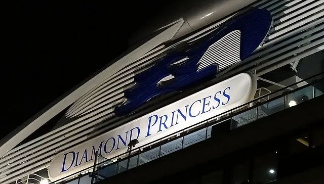

历险“病毒邮轮”：钻石公主号621人感染始末
原文链接 备份链接 钻石公主号邮轮在全球新冠疫情中是一个特殊又典型的样本：由于邮轮的封闭环境，它成为了传染集中暴发地，证明了全人类的普遍易感性；这又是一艘停靠在日本、船籍是英国、运营主体属于美国的邮轮， …

图片来源：WikiCommons
记者：田思奇
“
“当我们回顾过去时，很容易对当时某一时刻的公共卫生决策做出评判。当时的决定，显然比让所有人分散在世界各地要好得多。研究这一特殊事件，看看过程中出了什么问题，这非常重要。”
”
当日本政府在2月5日下令隔离“钻石公主”号两周时，没有人会想到，这艘载有3700人的船上竟会出现超过630名新冠肺炎确诊病患。
距离从横滨港出发已经过去一个月，“钻石公主”号终于开始陆续送走船上来自数十个国家的乘客和船员。这段史无前例的相聚之后，船上的人正走向截然不同的新阶段：
确诊患者及其密切接触者去往日本国内的医疗机构和特定隔离设施；病毒检测呈阴性的外国乘客，例如美国和澳大利亚的公民，则乘包机回国开启额外两周隔离期；而重获自由的日本乘客大都在横滨站就地解散，有的已经和朋友约在寿司店见面。

乘客Daxa在Twitter公开了他拿到的下船许可
而对于原本没有责任和义务接纳这艘国际邮轮的日本厚生劳动省（下称“厚劳省”）来说，他们仍需继续回应一个被外界质疑无数的问题：把所有人隔离在船上两周，真的是最好的办法吗？
1月20日从横滨出发的“钻石公主”号途经鹿儿岛、中国香港和台湾，以及越南等地。在此期间，一名曾出现咳嗽症状的80岁乘客于1月25日在香港下船，并在2月1日确诊感染新冠病毒。这时，距离该乘客下船已过去一周，“钻石公主”号已离开冲绳，载着2666名乘客和1045名船员踏上返回横滨港的航程。
虽然“钻石公主”号的起点和终点都是日本，但这艘属于美国邮轮公司的船舶悬挂着英国旗帜，理应根据由所属国管理的“旗国主义”原则适用英国法律。
《日本经济新闻》评论强调，日本允许邮轮靠岸、承担乘员的检查并提供生活支持，并非国际法上的义务，这是考虑到近半数乘客是日本人的情况下依然可以作出的判断。该评论援引日本政府人士的话表示，“本来是可以拒绝邮轮靠岸的”。
的确，在确诊患者出现后，日本完全可以依据其出入国管理法第5条第1项中提到的“有可能危害日本利益和公共安全的情况”拒绝“钻石公主”号靠岸。这正是日本之后拒绝“威士特丹”号邮轮靠岸，以及拒绝曾到访中国浙江者入境的法律依据。
但日本厚劳省还是接过了任务。美国乘客马修·史密斯对界面新闻表示，从2月3日到4日，所有乘客都测量了体温，还有一些人接受了血液测试。“2月5日早上7点，船长告诉我们，因为有10个人的病毒检测呈阳性，日本官员将对我们进行14天的隔离，在此期间我们必须留在船舱内。”
日本首相安倍晋三2月5日当天在对策总部表示，“现在面对大型客船内的集体感染这一新情况，必需采取万全措施”。
面对突如其来的两周隔离，乘客和船员们当时不会意识到，按照日本国立传染病研究所事后发布的研报，有明确证据表明，在2月5日对邮轮实施检疫之前，“新冠病毒已经在船上有大量传播”。
日本北海道大学教授西浦博20日依据国立传染病研究所数据分析称，在乘客和船员们开始待在房间里待命前，船内是“平均1名感染者传染给5个人的高风险环境”。
那么，既然要采取措施防止病毒扩散，日本政府为什么不让所有人离开邮轮，让他们待在陆地上的隔离设施内？
首先，日本政府有避免病毒在国内传播的考量。共同社援引政府相关人士表示：“为了防止（病毒）在国内的扩散，认为全员留船更安全。”首相官邸消息人士称：“尽到最大努力。即使被说初期应对太慢，也已经是在拼命去做了。”
日本厚劳省内部还有观点指出，2009年爆发甲型H1N1流感时，“把资源配置到边境防控措施方面，导致医疗机构变得脆弱”。并且邮轮上的人员约8成是外国人，而日本只有有限的医疗机构有能力接待不会日语的外国人。
此外，当“钻石公主”号靠岸时，日本对新冠病毒的检测能力每天只有300人次左右。如果集中力量检测船上所有人，很可能削弱日本其他各地的检测能力。
日本环境感染学会调查组负责人，岩手医科大学教授樱井滋表示：“既然陆地上没有能够容纳很多人的巨大检疫站，那么（留在船上）就是合适的方法”。
历经初始的混乱后，“钻石公主”号上的船员和乘客过上了按部就班的隔离生活。公主邮轮表示，船上乘客继续享用免费网络和电信服务，在每日菜单上选择的食物和饮料将被直接送至隔离的舱房，通过厚劳省检测的船员仍会按规定履行职责。
此外，邮轮公司也与权威卫生机构紧密协作，采取措施最大程度减少传染性疾病在船上的输入和扩散，并增加环境消毒的频次。
与此同时，一些乘客开始在社交网络分享自己的隔离生活，向各国网友和媒体介绍每天早中晚吃了什么，自己和同伴如何打发“禁足”的时光。

船上发放的折纸和数独游戏 来源：Daxa的Twitter
然而隔离期并非平静又愉快。如果病毒检测的结果呈阳性，乘客和船员会被带下船送往日本的医疗机构。如果检测呈阴性，他们将留在船上直到隔离期结束。
美国乘客泰勒·托雷斯对界面新闻表示，他和妻子因为上船前后得了流感、出现咳嗽症状而率先接受病毒检测，没有被通知确诊。然而夫妇二人也迟迟没有收到厚劳省宣布他们结果为阴性的消息。在有限的检测能力下，船上所有人只得持续等待日本厚劳省发布令人大悲或大喜的通知。
隔离前三天（至2月7日），邮轮上共确诊70人；到了第六天（2月10日）人数翻倍接近翻倍至130多例确诊。此时中国香港乘客黄雅曦对界面新闻透露，船上发放的口罩已经从普通口罩升级为N95。
北海道大学教授西浦博研究称，自厚劳省要求乘客和船员待在房间里待命的5日起，平均传染人数从5人减少到1人，“通过采取对策，感染率急速缩小了”。
到了2月17日，厚劳省宣布一日内新增99人确诊，创隔离期内最高。截至2月20日，船上共发现634人感染新冠病毒，其中两名80多岁乘客不治离世。
随着确诊病例数量的急剧上升，以及多名上船的厚劳省职员确诊，越来越多的观察研究认为，船上的隔离并不完善。美国《纽约时报》指出，这是“史无前例的失败”。韩国也有电视台批评称：“在保健卫生领域一直自诩为世界一流的日本声誉留下污点。”
日本国立传染病研究所提到，为了维持船上生活的运行，船员必须继续提供一定服务，这也导致船员在隔离期内没有像乘客一样完全隔离。
从2月11日起上船指导的樱井滋教授发现，船上人员戴着的N95口罩很容易在15分钟后让人喘不过气，但松开透气的过程可能就会有手脸接触，导致病毒蔓延。此外船员手册中写着用自来水洗手后再涂酒精消毒，但如果手上留有水，消毒的效果就会打折扣。
樱井滋指出，关于船内的状况，“在船内，虽然按照手册采取了基本的感染预防措施，但是船员感受到了由于国家和语言都不同，传达防疫对策的难度”。
在隔离期即将结束时，一位医学专家发布的视频引发更大的争议。神户大学医院感染症内科的教授岩田健太郎2月18日在YouTube发布视频讲述了他在“钻石公主”号上看到的场景。在岩田于2月20日自行删除前，该视频已获得超100万次点击。
岩田健太郎自称在传染病方面工作20年，有应对埃博拉病毒和SARS的专业知识和经验。即便如此，他仍然认为邮轮上的情况“真的非常悲惨，从心底感到害怕”。
他说，邮轮上没有区分有病毒传染可能的“红区”和无需做防护的“绿区”，很多人没戴口罩，发热患者会从自己房间直接走去医务室。检疫所的人会突然跟他说：“啊，刚才走过去的那人是患者”。
此外，岩田自称在与厚劳省高层对话时对方态度冷淡。想提建议的他被叫下船，还取消了他的检疫许可。他认为日本没有像中国一样重视消息的公开透明，完全没有公开‘钻石公主’号上的情报。“如果谁都不公开，我就只有在这里公开了。”
不过世卫组织突发事件规划执行主任迈克尔·瑞恩2月18日表示：“这艘船上的情况显然已经发生了变化，日本当局最初做出隔离船上所有乘客的决定，这使得乘客可以留在一个可以被观察的环境中，在那里他们有单独的住宿设施和其他的一切。显然，在当时的情况下，这比让所有人分散在世界各地要好得多。”
2月19日，也就是“钻石公主”号隔离期结束的日子。数百名乘客依次离开，登上久违的陆地。而日本政府也开始对岩田发表在网络上的说法予以解释。
厚劳省官员对《朝日新闻》指出，船上没有专家，由“外行领导传染病防御”的说法有误。熟悉传染病的医护人员每天都在现场工作，还要接受学会针对传染病的指导。他强调像医院一样在船上做区分存在结构上的局限性，运送感染者时其他人都会设法避免出现在走廊上。
此前公主邮轮公司也表示，日本政府为邮轮至少提供了7000个防护口罩和由16名医生、12名护士及医疗接待人员构成的专业团队。
2月20日早些时候，日本厚劳相加藤胜信回应称，根据现场工作人员的说法，感染症专家们指出了各种各样的课题，直到今天每天都在做修正。
对于网络上有关日本政府施压岩田删除视频的说法，日本内阁官房长官菅义伟在20日的记者会上否认政府从中干预，并强调“（船上）有管理感染的专家常驻”。
岩田在2月20日自行删除了视频。这天下午，他在东京通过电视画面直播举行的记者会上表示，“指出问题后，船内针对感染的对策有了很大的改善。”
岩田称：“我上船的时候，船内的感染对策还不够充分，昨天（2月19日），从有关人员那里听说，船内的区域划分得到了彻底的贯彻，对策有了很大改善。”此外，“关于船内感染者的数据，国立传染病研究所首次发表研究报告等信息公开的措施，也有一定的作用”。
然而几番说明的公信力又被厚劳省副大臣桥本岳破坏。他在Twitter上发图强调船上区分了“清洁路线”和“不洁路线”，结果被网友发现两道门前方共用宽敞的中厅，两条路实际上难以隔离。随后桥本删除了图片。

桥本岳发在Twitter的图片
岩田评价道：“显然他把推特删除了，我很高兴他知道问题确实存在。”同时岩田指出，从19日开始离开邮轮的乘客“还有感染的风险，需要接受两周观察”。然而大量日本乘客已乘坐公共交通工具回家，无需接受额外隔离。
川崎市健康安全研究所所长冈部信彦2月12日对《日本经济新闻》表示，日本全国只有大约1800个传染病专用床位，如果轻症患者也要住院，医院将很快人满为患，优先治疗重症患者的机制非常重要。
樱井滋认为，以美国为例，船上包机回国的乘客只有300人，在军事基地隔离是可行的。然而船上日本人太多，没有可以隔离的设施，“这是现实”。
世界卫生组织2月18日在日内瓦表示，虽然让乘客和乘务员留在船上的最初措施是令人满意的，但感染的蔓延超出了预想。该组织还呼吁对下船的人继续提供必要的护理。
“资源有限，医院总会有某些物资耗尽，如果说东京地区可以处理这样的情况，日本其他地方就不一定了，”国际医疗福祉大学公众卫生学教授和田耕治说。“疫情可能还要持续至少几个月，政府最好制定一个计划，为长期应对做打算。”
“当我们回顾过去时，很容易再对当时某一时刻的公共卫生决策做出评判，”世卫组织的迈克尔·瑞恩说。
“这是发生在船上的不幸事件，我们相信日本当局和接收这些人的政府将能够以适当的方式跟踪这些（下船的）人，确保他们得到适当的护理。研究这一特殊事件，看看是什么问题导致传播给船上的人，这是非常重要的。”他说。
未经授权 禁止转载

原文链接 备份链接 钻石公主号邮轮在全球新冠疫情中是一个特殊又典型的样本：由于邮轮的封闭环境，它成为了传染集中暴发地，证明了全人类的普遍易感性；这又是一艘停靠在日本、船籍是英国、运营主体属于美国的邮轮， …
原文链接 备份链接 「钻石公主号」邮轮的离岸隔离进行到第九天，已经有174人确认感染新冠肺炎，超过了日本本土的确诊感染总数，且还在增加。一个突然来袭的新型病毒，一场突然降临的隔离，一艘无法靠岸的船。「钻石公主号」像个隐喻，它暴露了看似平滑 …
原文链接 备份链接 _ 一名香港游客感染了新冠肺炎病毒，使得这艘邮轮的“春节之旅”演变为一场全球直播的公共卫生事件 _ 文 |《财经》记者 杨立赟 余乐 编辑 | 余乐 最近一周以来，停靠在日本横滨港的“钻石公主号”邮轮成为了全球关注的 …
原文链接 备份链接 澎湃新闻记者 张无为 亚伯在“钻石公主”号上拍下的富士山 本文图片均来自大卫·亚伯社交媒体 2月19日，在经历了14天的海上隔离后，备受关注的“钻石公主”号邮轮首批新冠病毒检测呈阴性且未与确诊病例同舱室的443名乘客终 …
原文链接 备份链接 图片来源：CNN “ 有报告指出，根据发病日期来看，在邮轮实施隔离措施后，乘客之间的传染有所减少。在隔离期后期，感染主要发生在船员之间以及客舱之内。 ” 继昨天443名检测呈阴性的乘客离开“钻石公主”号邮轮后，600多 …